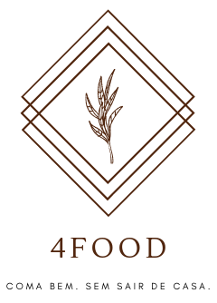

O 4Food é um projeto de uma grande rede de supermercados que está buscando se digitalizar e criar um
sistema de compras e entregas recorrentes por aplicativo para solucionar problemas de compras de
supermercado online e compras de comidas prontas.
O projeto 4Food foi desenvolvido pela startup Alves5, que nasceu de um projeto em grupo do Bootcamp da Labenu, formada por Olavo Marques do Nascimento, Márleo Piber da Rosa e Evandro Paulo Folletto.
O projeto 4Food foi desenvolvido pela startup Alves5, que nasceu de um projeto em grupo do Bootcamp da Labenu, formada por Olavo Marques do Nascimento, Márleo Piber da Rosa e Evandro Paulo Folletto.